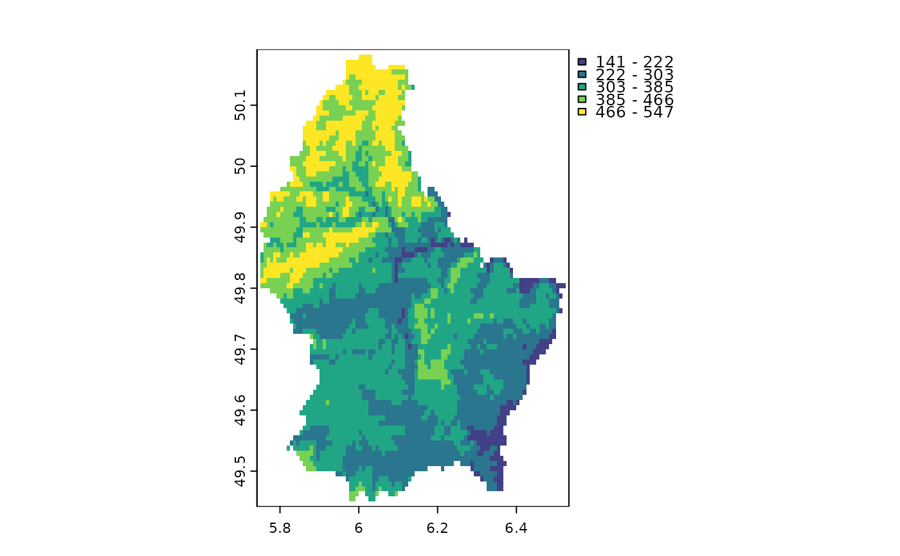
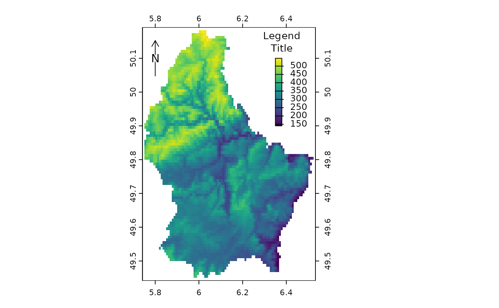
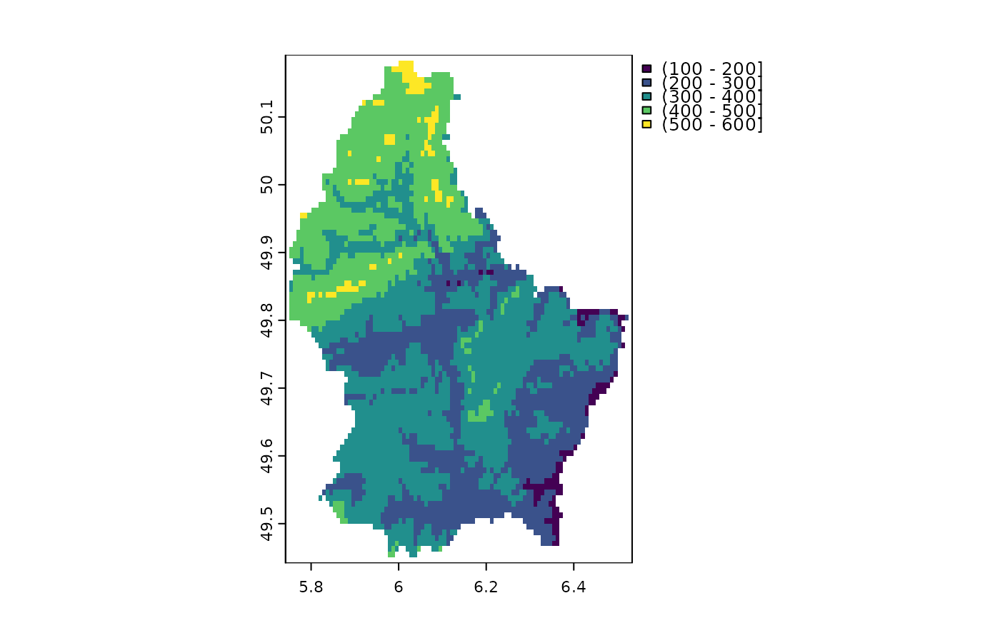
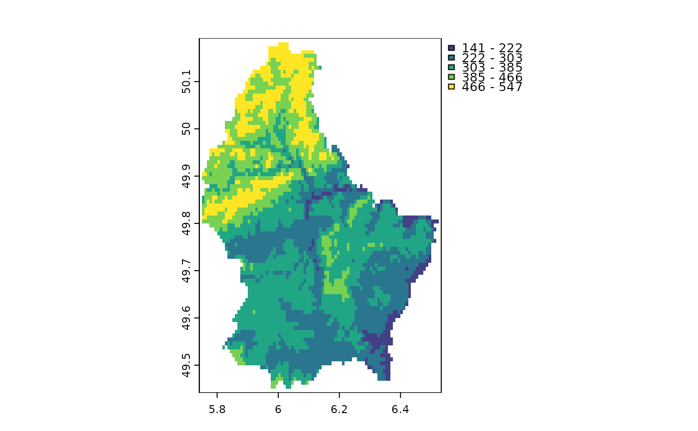
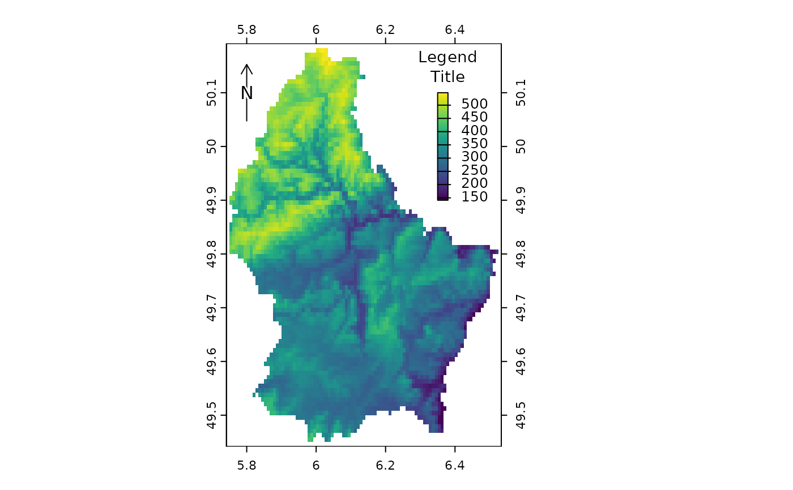
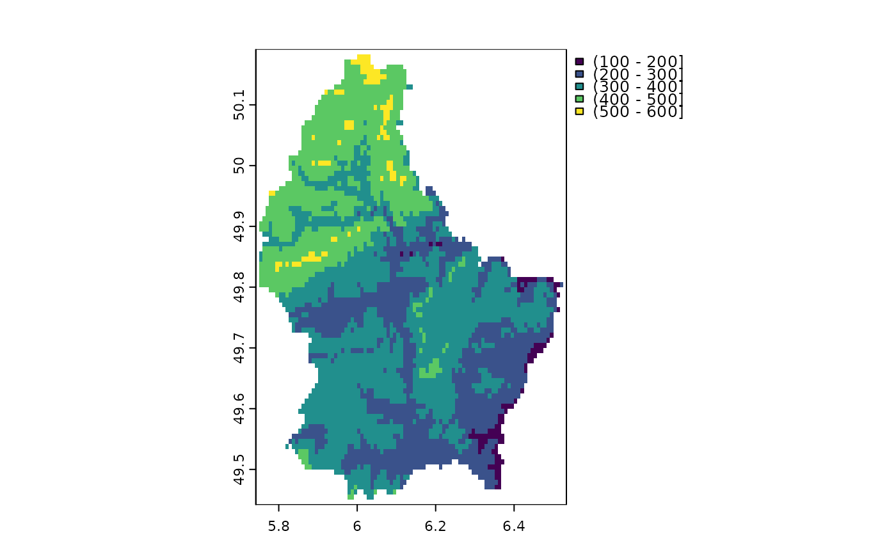
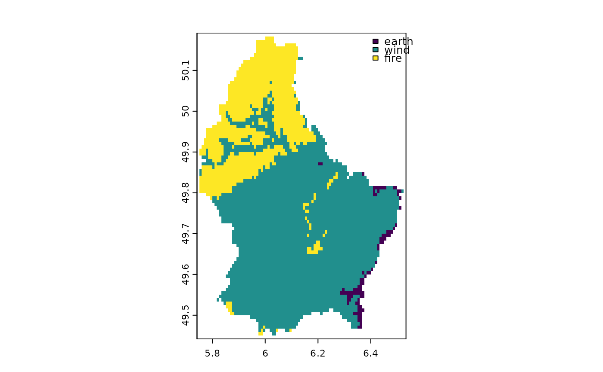
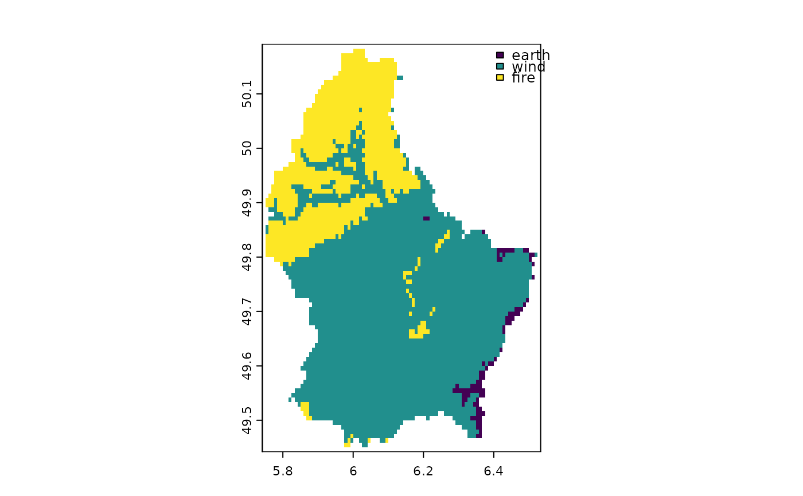

Make a map
plot.RdPlot the values of a SpatRaster or SpatVector to make a map.
See points, lines or polys to add a SpatVector to an existing map (or use argument add=TRUE).
There is a separate help file for plotting a SpatGraticule or SpatExtent.
Usage
# S4 method for class 'SpatRaster,numeric'
plot(x, y=1, col, type=NULL, mar=NULL, legend=TRUE, axes=!add, plg=list(), pax=list(),
maxcell=500000, smooth=FALSE, range=NULL, fill_range=FALSE,
levels=NULL, all_levels=FALSE, breaks=NULL, breakby="eqint", fun=NULL,
colNA=NULL, alpha=NULL, sort=FALSE, decreasing=FALSE, grid=FALSE, ext=NULL,
reset=FALSE, add=FALSE, buffer=FALSE, background=NULL, box=axes, clip=TRUE, ...)
# S4 method for class 'SpatRaster,missing'
plot(x, y, main, mar=NULL, nc, nr, maxnl=16, maxcell=500000, add=FALSE, ...)
# S4 method for class 'SpatRaster,character'
plot(x, y, ...)
# S4 method for class 'SpatVector,character'
plot(x, y, col=NULL, type=NULL, mar=NULL, add=FALSE, legend=TRUE, axes=!add,
main="", buffer=TRUE, background=NULL, grid=FALSE, ext=NULL, sort=TRUE,
decreasing=FALSE, plg=list(), pax=list(), nr, nc, colNA=NA, alpha=NULL,
box=axes, clip=TRUE, ...)
# S4 method for class 'SpatVector,numeric'
plot(x, y, ...)
# S4 method for class 'SpatVector,missing'
plot(x, y, values=NULL, ...)
# S4 method for class 'SpatVectorCollection,missing'
plot(x, y, main, mar=NULL, nc, nr, maxnl=16, ...)Arguments
- x
SpatRaster or SpatVector
- y
missing or positive integer or name indicating the layer(s) to be plotted
- col
character vector to specify the colors to use. The default is
map.pal("viridis", 100). The default can be changed with theterra.paloption. For example:options(terra.pal=terrain.colors(10)). Ifxis aSpatRaster, it can also be adata.framewith two columns (value, color) to get a "classes" type legend or with three columns (from, to, color) to get an "interval" type legend- type
character. Type of map/legend. One of "continuous", "classes", or "interval". If not specified, the type is chosen based on the data
- mar
numeric vector of length 4 to set the margins of the plot (to make space for the legend). The default is (3.1, 3.1, 2.1, 7.1) for a single plot with a legend and (3.1, 3.1, 2.1, 2.1) otherwise. The default for a RGB raster is 0. Use
mar=NAto not set the margins- legend
logical or character. If not
FALSEa legend is drawn. The character value can be used to indicate where the legend is to be drawn. For example "topright" or "bottomleft". Useplgfor more refined placement. Not supported for continuous legends (the default for raster data)- axes
logical. Draw axes?
- buffer
logical. If
TRUEthe plotting area is made slightly larger than the extent ofx- background
background color. Default is no color (white)
- box
logical. Should a box be drawn around the map?
- clip
logical. Should the axes be clipped to the extent of
x?- plg
list with parameters for drawing the legend. For the classes and interval type legend see the arguments for
legend. For examplexandycan be used to place the legend. You can also use keywords such as "topleft" and "bottomright" to place the legend at these locations inside the map rectangle.Some of these do not apply to a continuous legend, or they behave a little differently. For example, only the placement keywords "left", "right", "top", and "bottom" are recognized; and when using these keywords, the legend is placed outside of the map rectangle. Additional parameters for continuous legends include:
digitsto set the number of digits to print after the decimal point.sizeto change the height and/or width; the defaults arec(1,1), negative values for size flip the order of the legend.atto set the location of the tic-marksticOne of these partially matched values: "through", "in", "out", or "none", to choose a tic-mark placement/length that is different from the default "through and out".
- pax
list with parameters for drawing axes. See the arguments for
axis. Argumentsside,tickandlabcan be used to indicate for which of the four axes to draw a line (side), tick-mark, and/or the tick-mark labels. The default isc(1:4)for side and1:2for the other two. Ifsideis changed the other two default to that value. Logical argumentretrocan be used to use a sexagesimal notation for the labels (degrees/minutes/hemisphere) instead of the standard decimal notation- maxcell
positive integer. Maximum number of cells to use for the plot
- smooth
logical. If
TRUEthe cell values are smoothed (only if a continuous legend is used)- range
numeric. minimum and maximum values to be used for the continuous legend
- fill_range
logical. If
TRUE, values outside ofrangeget the colors of the extreme values; otherwise they get colored asNA- levels
character. labels for the legend when
type="classes"- all_levels
logical. If
TRUE, the legend shows all levels of a categorical raster, even if they are not present in the data- breaks
numeric. Either a single number to indicate the number of breaks desired, or the actual breaks. When providing this argument, the default legend becomes "interval"
- breakby
character or function. Either "eqint" for equal interval breaks, "cases" for equal quantile breaks. If a function is supplied, it should take a single argument (a vector of values) and create groups
- fun
function to be called after plotting each SpatRaster layer to add something to each map (such as text, legend, lines). For example, with SpatVector
v, you could dofun=function() lines(v). The function may have one argument, representing the layer that is plotted (1 to the number of layers)- colNA
character. color for the NA values
- alpha
Either a single numeric between 0 and 1 to set the transparency for all colors (0 is transparent, 1 is opaque) or a SpatRaster with values between 0 and 1 to set the transparency by cell. To set the transparency for a given color, set it to the colors directly
- sort
logical. If
TRUElegends with categorical values are sorted. Ifxis aSpatVectoryou can also supply a vector of the unique values, in the order in which you want them to appear in the legend- decreasing
logical. If
TRUE, legends are sorted in decreasing order- grid
logical. If
TRUEgrid lines are drawn. Their properties such as type and color can be set with thepaxargument- nc
positive integer. Optional. The number of columns to divide the plotting device in (when plotting multiple layers)
- nr
positive integer. Optional. The number of rows to divide the plotting device in (when plotting multiple layers)
- main
character. Main plot titles (one for each layer to be plotted). You can use arguments
cex.main,font.main,col.mainto change the appearance; andloc.mainto change the location of the main title (either two coordinates, or a character value such as "topleft")- maxnl
positive integer. Maximum number of layers to plot (for a multi-layer object)
- add
logical. If
TRUEadd the object to the current plot- ext
SpatExtent. Can be use instead of xlim and ylim to set the extent of the plot
- reset
logical. If
TRUEadd the margins (see argumentmar) are reset to what they were before calling plot; doing so may affect the display of additional objects that are added to the map (e.g. withlines)- values
Either a vector with values to be used for plotting or a two-column data.frame, where the first column matches a variable in
xand the second column has the values to be plotted- ...
arguments passed to
plot("SpatRaster", "numeric")and additional graphical arguments
Examples
## SpatRaster
f <- system.file("ex/elev.tif", package="terra")
r <- rast(f)
plot(r)
 plot(r, type="interval")

e <- c(6.37, 6.41, 49.9, 50.1)
plot(r, plg=list(ext=e, title="Legend\nTitle", title.cex=0.9),
pax=list(side=1:4, retro=FALSE))
north(cbind(5.8, 50.1))

d <- classify(r, c(100,200,300,400,500,600))
plot(d, type="classes")

plot(d, type="interval", breaks=1:5)
plot(r, type="interval")

e <- c(6.37, 6.41, 49.9, 50.1)
plot(r, plg=list(ext=e, title="Legend\nTitle", title.cex=0.9),
pax=list(side=1:4, retro=FALSE))
north(cbind(5.8, 50.1))

d <- classify(r, c(100,200,300,400,500,600))
plot(d, type="classes")

plot(d, type="interval", breaks=1:5)
 plot(d, type="interval", breaks=c(1,4,5), plg=list(legend=c("1-4", "4-5")))
plot(d, type="interval", breaks=c(1,4,5), plg=list(legend=c("1-4", "4-5")))
 plot(d, type="classes", xlim=c(5.6, 6.6),
plg=list(legend=c("Mr", "Xx", "As", "Zx", "Bb"), x="bottomleft"))
plot(d, type="classes", xlim=c(5.6, 6.6),
plg=list(legend=c("Mr", "Xx", "As", "Zx", "Bb"), x="bottomleft"))
 x <- trunc(r/200)
levels(x) <- data.frame(id=0:2, element=c("earth", "wind", "fire"))
plot(x, plg=list(x="topright"),mar=c(2,2,2,2))

oldpar <- par(no.readonly=TRUE)
# two plots with the same legend
dev.new(width=6, height=4, noRStudioGD = TRUE)
par(mfrow=c(1,2))
plot(r, range=c(50,600), mar=c(1,1,1,4))
plot(r/2, range=c(50,600), mar=c(1,1,1,4))
# as we only need one legend:
par(mfrow=c(1,2))
plot(r, range=c(50,600), mar=c(2, 2, 2, 2), plg=list(size=0.9, cex=.8),
pax=list(side=1:2, cex.axis=.6), box=FALSE)
#text(182500, 335000, "Two maps, one plot", xpd=NA)
plot(r/2, range=c(50,600), mar=c(2, 2, 2, 2), legend=FALSE,
pax=list(side=c(1,4), cex.axis=.6), box=FALSE)
par(oldpar)
# multi-layer with RGB
s <- rast(system.file("ex/logo.tif", package="terra"))
s
#> class : SpatRaster
#> dimensions : 77, 101, 3 (nrow, ncol, nlyr)
#> resolution : 1, 1 (x, y)
#> extent : 0, 101, 0, 77 (xmin, xmax, ymin, ymax)
#> coord. ref. : Cartesian (Meter)
#> source : logo.tif
#> colors RGB : 1, 2, 3
#> names : red, green, blue
#> min values : 0, 0, 0
#> max values : 255, 255, 255
plot(s)
# remove RGB
plot(s*1)
# or use layers
plot(s, 1)
plot(s, 1:3)
# fix legend by linking values and colors
x = rast(nrows = 2, ncols = 2, vals=1)
y = rast(nrows = 2, ncols = 2, vals=c(1,2,2,1))
cols = data.frame(id=1:2, col=c("red", "blue"))
plot(c(x,y), col=cols)
r = rast(nrows=10, ncols=10, vals=1:100)
dr = data.frame(from=c(5,33,66,150), to=c(33, 66, 95,200), col=rainbow(4))
plot(r, col=dr)
### SpatVector
f <- system.file("ex/lux.shp", package="terra")
v <- vect(f)
plot(v)
plot(v, "NAME_2", col=rainbow(12), border=c("gray", "blue"), lwd=3)
plot(v, 2, pax=list(side=1:2), plg=list(x=6.16, y=50.17, cex=.8), xlim=c(5.7, 6.7))
plot(v, 4, pax=list(side=1:2), plg=list(x=6.2, y=50.2, ncol=2), main="", box=FALSE)
plot(v, 1, plg=list(x=5.8, y=49.37, horiz=TRUE, cex=1.1), main="", mar=c(5,2,0.5,0.5))
plot(v, density=1:12, angle=seq(18, 360, 20), col=rainbow(12))
plot(v, "AREA", type="interval", breaks=3, mar=c(3.1, 3.1, 2.1, 3.1),
plg=list(x="topright"), main="")
plot(v, "AREA", type="interval", breaks=c(0,200,250,350),
mar=c(2,2,2,2), xlim=c(5.7, 6.75),
plg=list(legend=c("<200", "200-250", ">250"), cex=1, bty="o",
x=6.3, y=50.15, box.lwd=2, bg="light yellow", title="My legend"))
x <- trunc(r/200)
levels(x) <- data.frame(id=0:2, element=c("earth", "wind", "fire"))
plot(x, plg=list(x="topright"),mar=c(2,2,2,2))

oldpar <- par(no.readonly=TRUE)
# two plots with the same legend
dev.new(width=6, height=4, noRStudioGD = TRUE)
par(mfrow=c(1,2))
plot(r, range=c(50,600), mar=c(1,1,1,4))
plot(r/2, range=c(50,600), mar=c(1,1,1,4))
# as we only need one legend:
par(mfrow=c(1,2))
plot(r, range=c(50,600), mar=c(2, 2, 2, 2), plg=list(size=0.9, cex=.8),
pax=list(side=1:2, cex.axis=.6), box=FALSE)
#text(182500, 335000, "Two maps, one plot", xpd=NA)
plot(r/2, range=c(50,600), mar=c(2, 2, 2, 2), legend=FALSE,
pax=list(side=c(1,4), cex.axis=.6), box=FALSE)
par(oldpar)
# multi-layer with RGB
s <- rast(system.file("ex/logo.tif", package="terra"))
s
#> class : SpatRaster
#> dimensions : 77, 101, 3 (nrow, ncol, nlyr)
#> resolution : 1, 1 (x, y)
#> extent : 0, 101, 0, 77 (xmin, xmax, ymin, ymax)
#> coord. ref. : Cartesian (Meter)
#> source : logo.tif
#> colors RGB : 1, 2, 3
#> names : red, green, blue
#> min values : 0, 0, 0
#> max values : 255, 255, 255
plot(s)
# remove RGB
plot(s*1)
# or use layers
plot(s, 1)
plot(s, 1:3)
# fix legend by linking values and colors
x = rast(nrows = 2, ncols = 2, vals=1)
y = rast(nrows = 2, ncols = 2, vals=c(1,2,2,1))
cols = data.frame(id=1:2, col=c("red", "blue"))
plot(c(x,y), col=cols)
r = rast(nrows=10, ncols=10, vals=1:100)
dr = data.frame(from=c(5,33,66,150), to=c(33, 66, 95,200), col=rainbow(4))
plot(r, col=dr)
### SpatVector
f <- system.file("ex/lux.shp", package="terra")
v <- vect(f)
plot(v)
plot(v, "NAME_2", col=rainbow(12), border=c("gray", "blue"), lwd=3)
plot(v, 2, pax=list(side=1:2), plg=list(x=6.16, y=50.17, cex=.8), xlim=c(5.7, 6.7))
plot(v, 4, pax=list(side=1:2), plg=list(x=6.2, y=50.2, ncol=2), main="", box=FALSE)
plot(v, 1, plg=list(x=5.8, y=49.37, horiz=TRUE, cex=1.1), main="", mar=c(5,2,0.5,0.5))
plot(v, density=1:12, angle=seq(18, 360, 20), col=rainbow(12))
plot(v, "AREA", type="interval", breaks=3, mar=c(3.1, 3.1, 2.1, 3.1),
plg=list(x="topright"), main="")
plot(v, "AREA", type="interval", breaks=c(0,200,250,350),
mar=c(2,2,2,2), xlim=c(5.7, 6.75),
plg=list(legend=c("<200", "200-250", ">250"), cex=1, bty="o",
x=6.3, y=50.15, box.lwd=2, bg="light yellow", title="My legend"))